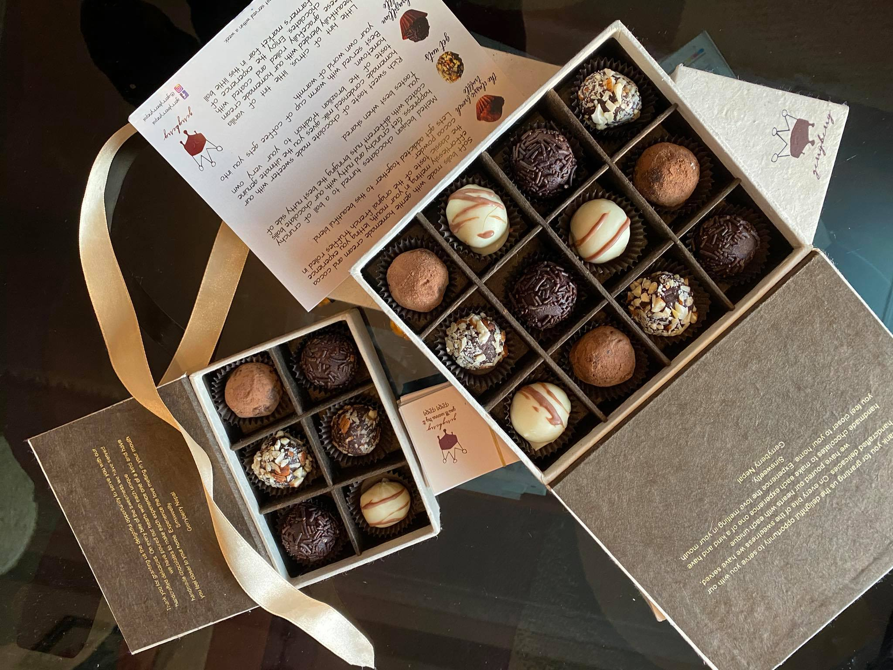
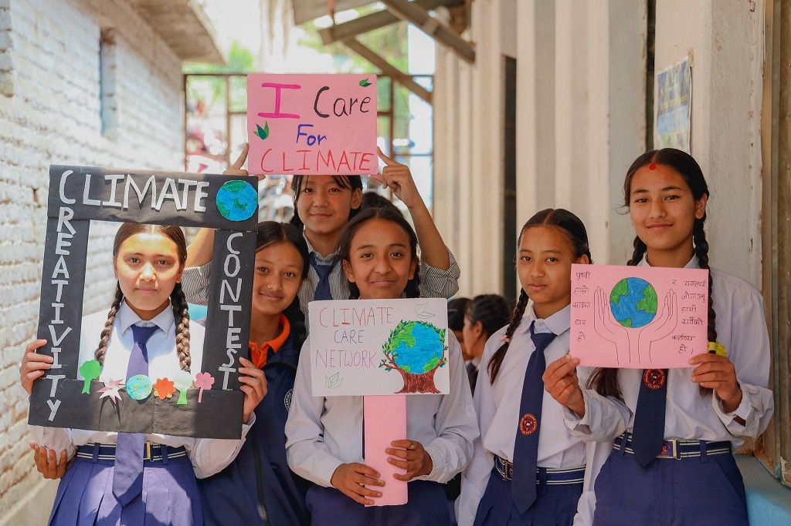

Startup and Leadership

Gerryberry Nepal: How I Built a Chocolate Company at 19
I founded a chocolate company from scratch at 19. Initilly built with a goal of learning about business operations, it became my dearest project of all time . The business gained success in just 2 years despite barriers including Covid. Learn more on how within 1.5 years of establishing, i started exporting chocolates internationally.

Project Bipad: Underlying the Two P's; People and Planet
In 2022, Our team was funded by KOICA for a one-year female empowerment project aimed at capacity building of rural women — teaching them to make their own sanitary pads to manage menstruation. The project successfully trained women and school girls.

Climate Care Network
In 2025, we created an interdisciplinary organization — a network of professionals dedicated to climate action, environment protection and educating the young generation about climate action.